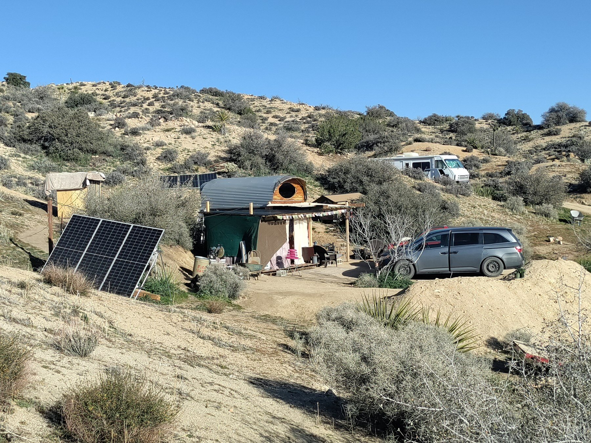
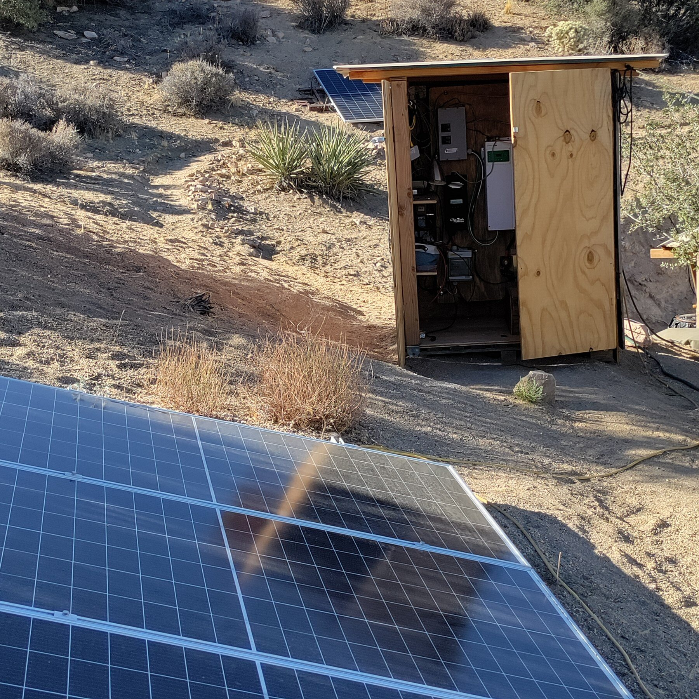
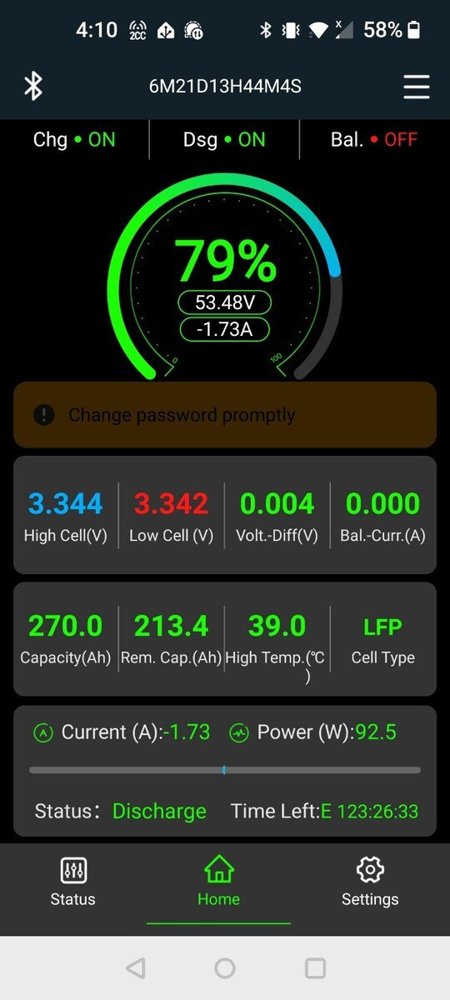

Field Report 001 · Energy
Fieldstation
Solar
System
Six solar panels, a LiFePO₄ battery bank, and a Schneider inverter form the electrical heart of the Boulder Gardens Fieldstation.

This is the primary solar power system for the Boulder Gardens Fieldstation.
Six Talesun TP6F72M(H)-395 panels provide 2.37 kW of nameplate solar capacity. Energy is stored in a sixteen-cell LiFePO₄ battery bank built from 3.2 V, 280 Ah cells: 51.2 V nominal and about 14.3 kWh of nominal storage. A Schneider Conext XW Pro 6848 NA inverter/charger can supply approximately 6.8 kW of continuous AC power.
An OutBack FLEXmax 60 charge controller manages the solar array, while a JK BMS monitors the battery cells. Together, the system powers the Fieldstation computers, lighting, networking equipment, communications infrastructure, and other everyday loads.
The complete system cost about $3,500.
It has been remarkably reliable. The only significant shutdown occurred when a solar-panel connection loosened, heated up, and eventually opened the circuit. The failed connection was repaired with heavier cable and a proper solar connector.
This six-panel system now forms the electrical foundation for much of the work happening at Boulder Gardens.
Photographic Record
The work, seen in place
Selected photographs from the private FieldStation source record.



System Thread
Where this system connects
Public synopsis derived from Boulder Gardens Fieldstation Workbook source record FR001. Detailed equipment records, calculations, unresolved questions, and corrections remain in the workbook.